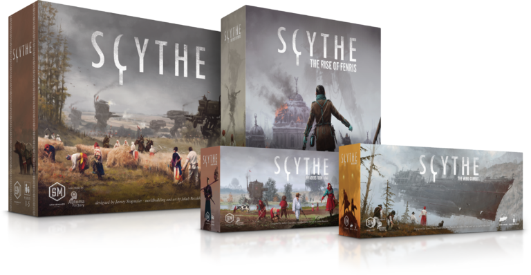
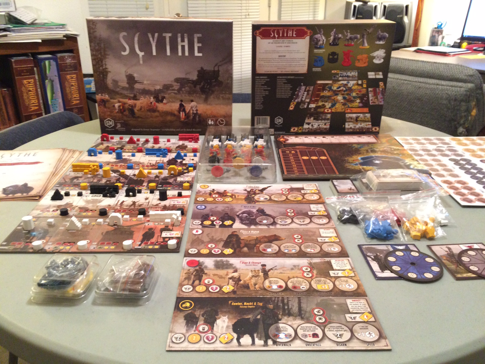
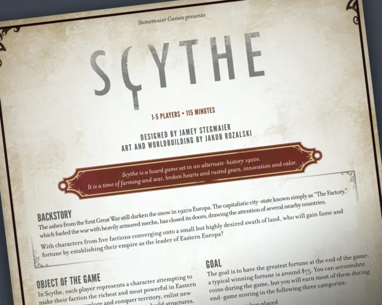

Pick a new action column
You generally cannot select the column used on your immediately previous turn. Look ahead to the actions you may want next.
INTRODUCTION TO WEB DEVELOPMENT / TECHNICAL DOCUMENTATION
PROJECT 04Build an engine. Expand your influence. Choose when to fight and when to hold back. This guide turns a complex-looking tabletop game into clear, manageable steps.

I chose Scythe because it is one of the board games I enjoy enough to explain to someone who has never played it. I like strategy games that offer more than one way to work toward victory. In Scythe, you can focus on building your economy, spreading across the map, upgrading your abilities, or deciding when combat is worth the risk. The resource-management side of the game makes every decision feel connected to your next turn. Combat matters, but winning does not simply mean defeating everyone else. I also enjoy the alternate-history artwork and the way each faction plays a little differently. It is the kind of game that rewards learning from your mistakes, which makes it a good subject for a step-by-step guide.
Scythe is an engine-building strategy board game set in an alternate 1920s version of Eastern Europe. Each player controls a faction, manages workers and resources, and competes to gain territory, achievements, and coins.
You take one top-row action on your player mat each turn and may then take the corresponding bottom-row action if you can afford it. Different player mats make familiar actions work differently, so there is no single perfect strategy for every game.
Use a different top-row section than the one you used last turn.
Gather resources, produce, trade, recruit, upgrade, or deploy mechs.
Progress toward the endgame while managing popularity and territory.
Before starting, organize the components. The base game includes a central game board, faction and player mats, wooden pieces, plastic miniatures, cards, coins, and resource tokens. Keep the official rulebook close by for exact setup values and faction-specific exceptions.

Quick reference: Board → Faction Mat → Player Mat → Pieces → Start
Use the official setup instructions to determine which faction and player mat each person receives, which cards to draw, and where everyone begins. This overview gives new players a reliable order for getting ready.
Setup checklist: shared board + player mats + starting pieces + cards and tracks.
Scythe turns are built around four columns on your player mat. Move your action token to a new column, resolve its top-row action, and optionally resolve the bottom-row action in that same column if you can pay the cost.
You generally cannot select the column used on your immediately previous turn. Look ahead to the actions you may want next.
Common options include moving units, producing resources, trading, or bolstering your faction.
Spend the listed resources to upgrade, deploy, build, or enlist, based on your player mat. If you cannot pay, skip it.
Track stars, popularity, power, resources, and which territories you control before the next turn.
Turn pattern: New column → top action → optional bottom action → next player

Combat uses secretly committed power and combat cards. Both sides reveal their chosen strength at the same time; the higher total wins, and ties favor the attacker. Because power is limited and a battle may affect popularity, a fight should support your larger plan.
The game ends as soon as a player places their sixth star. That player starts the endgame, but does not automatically win. After the end is triggered, players calculate their final wealth in coins.
Final scoring includes coins already held plus rewards for placed stars, controlled territories, and certain resources. Popularity determines which scoring tier is used, making it useful even if it does not immediately generate coins. The player with the highest final coin total wins.
Remember: sixth star ≠ automatic victory. Check the printed scoring chart and any applicable structure bonus.
New players often spend more time thinking about combat than about how their economy works. These habits help keep early turns focused:
These questions cover situations that often interrupt a first game. When a faction power or expansion changes the normal rule, consult that rulebook for the specific exception.
Normally no. Move your action token to a different column on your next turn. Check specific special abilities for any exceptions.
No. You can take the top-row action and skip the bottom-row action if you lack resources or prefer not to pay its cost.
No. It ends the game immediately, and then everyone scores. A different player can have the most coins after scoring.
When both sides reveal equal total combat strength, the attacker wins the battle under the base rules.
Use this as a first-play companion, then consult the official rulebook for precise movement, encounters, combat details, faction abilities, and scoring exceptions.
Game credit: Scythe is designed by Jamey Stegmaier and published by Stonemaier Games. This unofficial page was prepared for an INF 250 class assignment.
← Return to course projects